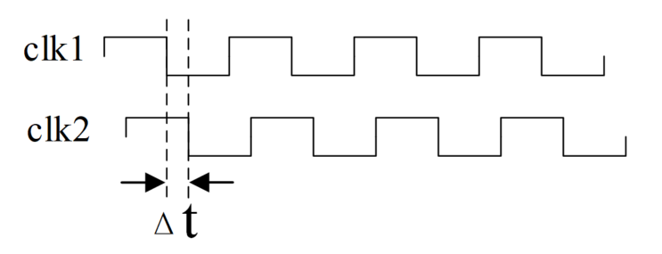
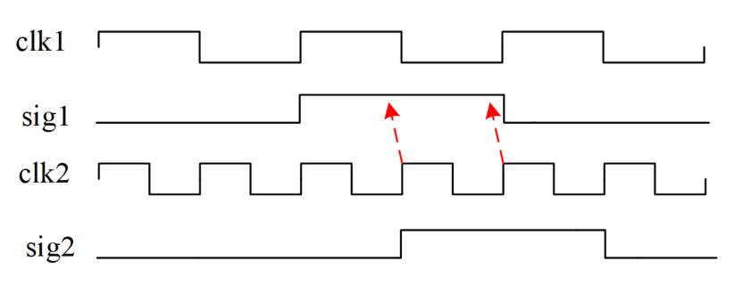
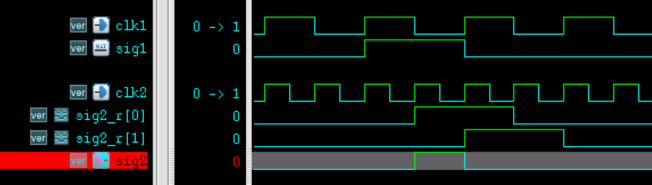
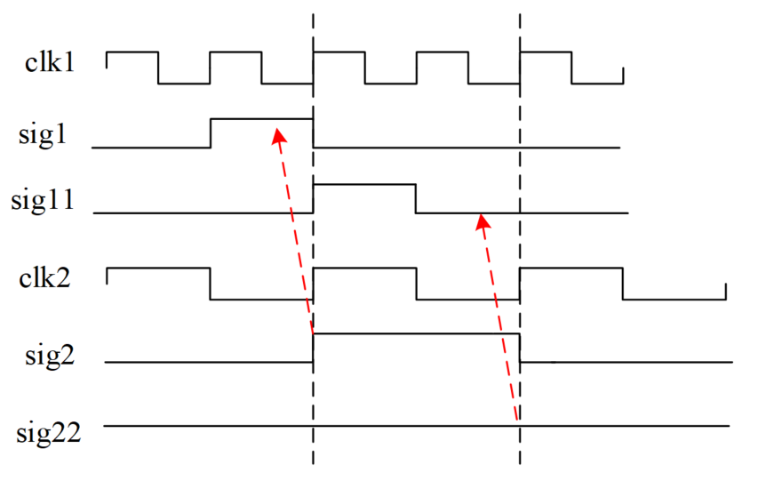
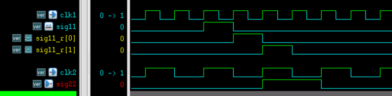
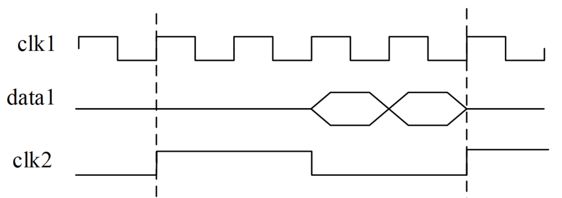

キーワード：同期，非同期
第3章からわかるように、フリップフロップの入力データとフリップフロップのクロックが無関係な場合、回路のタイミングが満たされなくなりやすい。本章では主に、モジュール間でタイミング violation を引き起こす可能性のある非同期問題を解決する。
非同期と同期の定義については、多くの場所で紹介されており、詳細にも違いがある。本章では主に非同期問題を解決する方法に焦点を当て、なぜ非同期クロックが発生するのかには関心を持たず、非同期回路の具体的な構造にも関心を持たず、非同期クロックのタイミング結果からのみ問題を分析・解決する。
同期クロック
デジタル設計では、一般的に、周波数が同じか周波数比が整数倍であり、かつ位相が同じか位相差が固定されている2つのクロックを同期クロックとみなす。
あるいは、クロックが同源で周波数比が整数倍である2つのクロックを同期クロックと理解することもできる。実際、クロックが同源であれば、クロックの位相差の固定性が保証される。具体的には次のように分類できる：
同源・同周波数・同相位
この種のクロックは周波数と位相がともに同じであり、同期している。クロック間のデータ転送は、通常のセットアップタイムとホールドタイムを満たしていればよく、特別な同期設計は必要ない。
同源・同周波数・異相位
2つのクロックが同周波数だが位相が異なる場合、位相差が固定されていれば同期していると見なすこともできる。2つのクロック間で転送されるデータ遅延を合理的な範囲内に制御すれば、タイミング問題は発生しないからである。また、固定されたクロック遅延はレイアウトレベルのネットリストで修正することもできる。
固定された位相差は、同源クロックにおいて2つのクロックが経路の違いによって生じるスキューと理解できる。

同源・異周波数だが整数倍の分周比を持つ
このような場合、一方のクロックはもう一方のクロックを分周したものであることが多く、位相差があっても固定される。
単一ビット信号が低速クロックドメインから高速クロックドメインに渡される場合、同源であるため、セットアップタイムとホールドタイムを満たしていれば、高速クロックドメインは常に低速クロックドメインから渡された信号を捕捉できる。
下図に示すように、clk2 の立ち上がりエッジは常に clk1 ドメインからの信号 sig1 を捕捉でき、捕捉された信号 sig2 のハイレベル持続周期も2つのクロックの周波数比、すなわち2周期となる。

clk2 ドメインの信号 sig2 を1クロック周期だけ持続させたい場合は、sig1 の立ち上がりエッジ検出を行う必要がある。
例
reg [1:0] sig2_r ;
always @(posedge clk2 or negedge rstn) begin
if (!rstn) sig2_r <= 2'b0 ;
else sig2_r <= {sig2_r[0], sig1} ;
end
assign sig2 = sig2_r[0] && !sig2_r[1];
シミュレーション結果を下図に示す：

単一ビット信号が高速クロックドメインから低速クロックドメインに渡される場合、低速クロックドメインが高速クロックドメインから渡された信号を安全に捕捉できれば、非同期問題は存在しない。2つのクロックは同源だからである。下図の sig1 から sig2 への転送のように。
しかし、高速クロックドメインの信号が狭すぎる場合、低速クロックドメインはその信号を取りこぼす可能性がある。下図の sig11 から sig22 への転送のように。この場合は、高速クロックドメインの狭いパルス信号を拡張する必要がある。

2つのクロックの周波数比が比較的小さい場合、高速クロックドメインで信号を遅延させる方法を用いて拡張できる。
2つのクロックの周波数比の差が大きい場合、高速クロックドメインでカウントする方法を用いて単一ビット信号の有効時間を延長できる。
遅延を利用して狭いパルス信号を拡張する方法の Verilog 記述は以下の通りである。clk1 と clk2 の周波数比が2であるため、clk2 クロックドメインで2クロック遅延させるだけでよい。
例
always @(posedge clk1 or negedge rstn) begin
if (!rstn) sig11_r <= 2'b0 ;
else sig11_r <= {sig11_r[0], sig11} ;
end
reg sig22_r ;
always @(posedge clk2 or negedge rstn) begin
if (!rstn) sig22_r <= 1'b0 ;
else sig22_r <= |sig11_r ;
end
assign sig22 = sig22_r ;
このとき、高速クロックドメインの信号は2クロック遅延されるため、必ず低速クロックドメインに捕捉される。下図の通りである。

要するに、同源かつ周波数比が整数倍の関係にある場合、これら2つのクロックは同期していると理解でき、特別な同期処理は不要である。以下では、非同期クロックの状況について簡単に紹介する。
非同期クロック
非同期クロックで動作する2つのモジュールがデータをやり取りする場合、クロックの位相関係を制御できないため、セットアップタイムとホールドタイムの violation が発生しやすい。以下の3つの状況のクロックは非同期と見なすことができる。
異なるソース
2つの異なるクロックソースから生成された2つのクロックは非同期であり、これは最も一般的な非同期クロックである。2つのクロックの周波数が同じであっても、電源投入ごとに両者の位相や位相差が同じであることは保証されないため、信号間の転送とクロックの関係も不確実である。
同源だが周波数比が整数倍でない
この場合、2つのクロック間の位相差も複数存在する可能性がある。例えば、同源の7MHzクロックと3MHzクロックでは、それらの間にも複数の位相差が現れ、タイミングも制御が難しい。一般的には非同期クロックとして扱う必要もある。
同源で周波数比が整数倍でもタイミング要件を満たさない
前述の同期問題の説明で述べたように、信号が高速クロックドメインから低速クロックドメインに渡される場合、低速クロックドメインが高速クロックドメインから渡された信号を安全に捕捉できれば、非同期問題は存在しない。しかし、信号が高速クロックドメインで反転する速度が速すぎると、低速クロックドメインが高速クロックドメインから渡された信号を安全に捕捉できない可能性があり、これも非同期問題と見なすことができる。
一般的に、低速クロックドメインのタイミング制約は比較的緩く、高速クロックドメインは比較的厳しい。
下図のように、高速クロックドメインの信号が低速クロックドメインの立ち上がりエッジの前に2回反転している。このとき、低速クロックドメインは一部のデータを取りこぼす。さらに、データの急激な変化も timing violation を引き起こす可能性がある。

ここでは非同期クロックの分類について簡単に紹介するだけであり、非同期問題の解決方法については後続の章を参照されたい。
クリックしてノートを共有
<p style="font-size:14px;">ノートは本記事の内容を拡張したものである必要があります！</p><br> <p style="font-size:12px;"><a href="../tougao.html" target="_blank">記事投稿はこちらをクリック</a></p> <p style="font-size:14px;"><a href="./runoob-user-test-intro.html" target="_blank">登録招待コードの取得方法</a></p> <h3 class="text-muted"><i class="fa fa-info-circle" aria-hidden="true"></i> ノートを共有する前に<a href=".." class="runoob-pop">ログイン</a>が必要です！</h3> <p><a href="./runoob-user-test-intro.html" target="_blank">登録招待コードの取得方法</a></p>